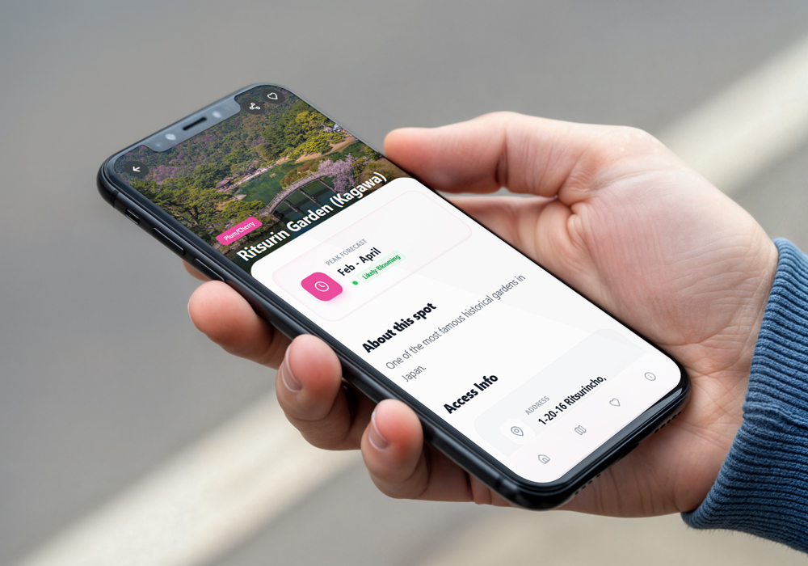

Find Hanami
BrandSnap is a design-first Chrome extension that transforms any website into a ready-to-use brand kit. It intelligently detects color palettes, font families, and logos, presenting them in a clean, visual interface built for designers.
- Role: Product Designer, UX/UI Designer
- Platform: Internet Browser (Google Chrome)
- Tools: Antigravity, ChatGPT
- Timeline: 6 hours
- Status: Concept to Functional MVP (Minimum Vaiable Product)
Goals
Create a lightweight, intuitive Chrome extension that:
- Extracts brand assets in one click
- Presents them in a clean, visual way
- Requires zero setup or login
Pain Points
Designers often need to reference or recreate a brand when:
- Auditing competitors
- Creating pitch decks
- Building landing pages
- Onboarding new clients
This usually means:
- Manually inspecting CSS for colors
- Guessing or hunting for fonts
- Searching the site for a usable logo
Target Users
- Designers
- Marketers
- Design Students
Design Principles
- Season-first: Time and nature drive the experience
- Low friction: No login, no setup, no learning curve
- Clarity over depth: Useful info, not encyclopedic content
- Mobile priority: Designed for outdoor, one-handed use

Key Features
Logo Detection
- favicon
- Open Graph image
- header or navigation images
- images or SVGs labeled as logos
- Includes light and dark background toggles
Technical Implementation
- Frontend: React-based popup UI
- Architecture: Chrome Extension (Manifest V3)
- Logic: Content scripts for DOM parsing and asset detection
Color Extraction
- Automatically detects dominant and supporting colors
- Displays swatches with HEX values
- Optimized for visual clarity and quick copying
Font Detection
- Identifies font families used on the page
- Shows preview text for each font
- Useful for quick brand matching and inspiration
Challenges
- Designing reliable logo detection across different site structures
- Handling dynamically loaded content on modern websites
- Balancing feature completeness with simplicity
- Ensuring Chrome Web Store compliance from day one
Outcome
- Shipped a fully functional Chrome extension MVP
- Validated a real-world design workflow problem
- Created a strong foundation for future monetization and iteration
View Github Repo